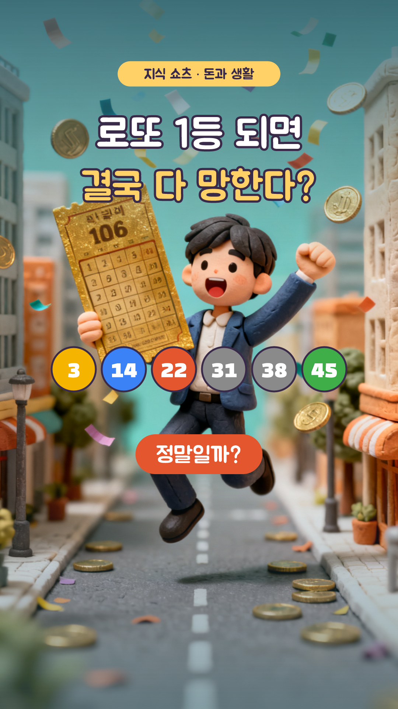
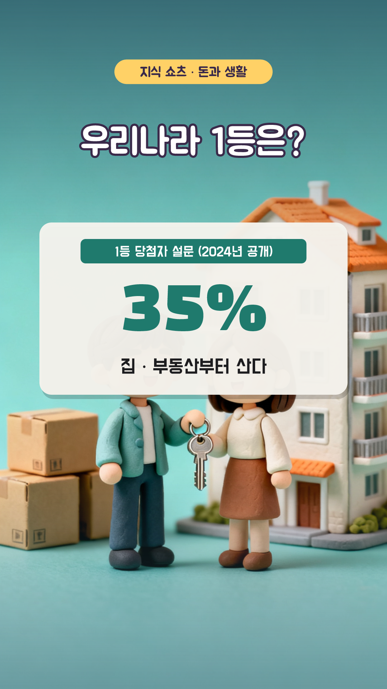
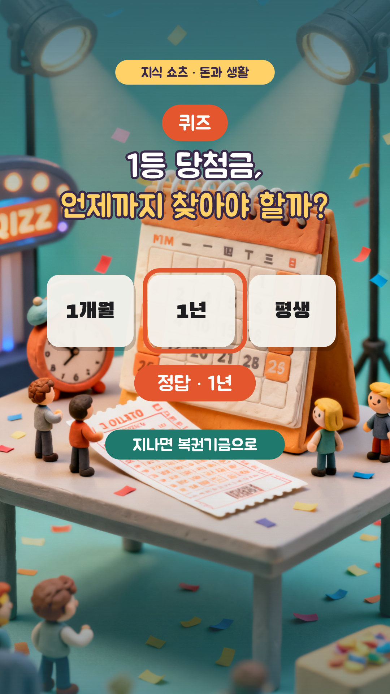

로또 1등은 정말 망할까? — 8컷 콘티
1분 (+ 썸네일 1초) · 1080×1920 · 30fps · 자막 카드 y=1480 · 내레이션 ko-KR-Chirp3-HD-Charon · 지식 쇼츠 18편 · 3D 클레이 AI(Seedream 4.0) + 인포그래픽

S01
0:00–0:04 · 4.4초
모션
ai 카메라 이동 0.0s, title 팝 0.0s, balls 팝 0.6s, really 도장 2.8s
내레이션
로또 1등에 당첨되면 결국 다 망한다? / 정말 그럴까요?
S02
0:04–0:12 · 7.6초
모션
ai 카메라 이동 0.0s, title 팝 0.0s, odds 왼쪽에서 0.3s, prize 오른쪽에서 2.2s, net 도장 4.6s, tax 페이드 5.0s
내레이션
1등 확률은 814만분의 1, 평균 당첨금은 약 20억 원 / 세금을 떼면 약 13억 7천만 원을 받아요
S03
0:12–0:22 · 10.0초
모션
ai 카메라 이동 0.0s, title 팝 0.0s, rumor 팝 0.4s, x 도장 3.8s, nope 도장 4.2s, src 아래에서 6.0s
내레이션
당첨자 70%가 파산한다는 말, 들어 보셨죠? / 그런데 이 숫자는 근거가 없어요 / 출처로 알려진 미국 재단이 자기 연구가 아니라고 밝혔거든요
S04
0:22–0:28 · 6.0초
모션
ai 카메라 이동 0.0s, title 팝 0.0s, study 팝 0.5s
내레이션
스웨덴 연구에선 큰돈에 당첨된 사람들이 / 10년이 넘게 지나도 삶의 만족도가 더 높았어요
S05
0:28–0:37 · 9.0초
모션
ai 카메라 이동 0.0s, title 팝 0.0s, study 팝 0.4s, src 페이드 1.0s, lesson 도장 6.2s
내레이션
반대로 미국 플로리다에선 1억 원 안팎을 받은 사람들이 / 파산을 막지 못하고 몇 년 미뤘을 뿐이었죠 / 결국 돈의 크기보다 쓰는 방법이 중요한 거예요

S06
0:37–0:42 · 5.0초
모션
ai 카메라 이동 0.0s, title 팝 0.0s, survey 팝 0.4s
내레이션
우리나라 1등 당첨자는 35%가 집부터 사겠다고 답했어요

S07
0:42–0:53 · 11.0초
모션
ai 카메라 이동 0.0s, badge 팝 0.0s, question 팝 0.3s, choices 팝 0.8s, answer 도장 4.4s, why 페이드 6.8s
내레이션
퀴즈! 로또 1등 당첨금, 언제까지 찾아가야 할까? / 정답은, 1년이에요! / 기한이 지나면 복권기금으로 넘어가요
S08
0:53–1:00 · 7.0초
모션
ai 카메라 이동 0.0s, look 팝 0.2s, button 팝 3.4s, finger 탭 4.0s
내레이션
더 많은 돈 이야기가 궁금하다면 구독해 주세요